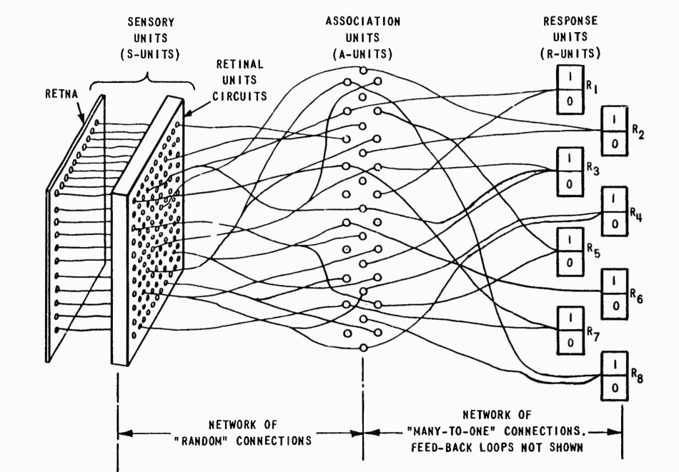

SUMÁRIO
1) Contexto Geral
2) Redes Neurais
3) MDP
4) Q-Learning
5) DQN [Deep-Q-Network]
6) Outros Exemplos
Contexto Geral: McCarthy e a IA
Modelo Estatístico Multivariável?
Inteligência Artificial

Rosenblatt: Perceptron
Figura -
Fonte
Figura -

Fonte
Limitado à classificação binária
Inverno da IA
Período de redução no financiamento e interesse em pesquisa de inteligência artificial
Causas
- Limitações hardware
- Expectativas irreais
- Críticas ao perceptron
- Redução de financiamento
Consequências
- Estagnação da pesquisa
- Ceticismo na comunidade
- Mudança de terminologia
- Foco em problemas mais específicos
Silicon Bubble
Ressurgimento da IA
Conteúdo sobre o ressurgimento da IA por volta de 2013
Redes Neurais
Conteúdo sobre Redes Neurais
MDP (Processo de Decisão Markov)
Conteúdo sobre MDP
Q-Learning
Conteúdo sobre Q-Learning
DQN (Deep Q-Network)
Conteúdo sobre DQN
Outros Exemplos
Conteúdo sobre outros exemplos
Resumo
Conteúdo do resumo da apresentação